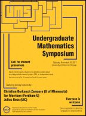

Undergraduate Mathematics Symposium
Saturday, November 18, 2017
University of Illinois at Chicago
Organized by Emily Dumas and Kevin Tucker
This page is about the
2017 symposium.
For the latest symposium information see the UMS home page.
About the symposium
The Undergraduate Mathematics Symposium at UIC is an annual one-day
meeting focusing on undergraduate mathematical research and
education. The meeting features invited lectures by mathematical
researchers, as well as contributed lectures and posters by undergraduates on their own research projects.
The 2017 UMS was held at UIC on Saturday, November 18, 2017.

Download the symposium poster (designed by Jānis Lazovskis)
Plenary speakers
-
Christine Berkesch Zamaere (U. Minnesota)
Polynomial linear algebra and geometry
Abstract: After an example-driven crash course in algebraic geometry for projective space, I will discuss how polynomial linear algebra can explain geometry. We'll then consider a generalization of this to other spaces, which is joint work with Daniel Erman and Gregory G. Smith. A basic understanding of vector spaces over fields might be helpful in understanding this talk, but it will not be necessary.
-
Ian Morrison (Fordham U.)
“Can you play a fair game of craps with a loaded pair of dice?” and related problems about factorization in ℝ≥ 0[x]
Slides (PDF)
Abstract: I hope to convince you that questions about factorizations of polynomials with non-negative real coefficients---not necessarily into irreducibles and possibly with conditions on the degrees of the factors---are worth studying by discussing several examples that have interesting answers. The question in the title arises from an equivalent formulation that asks what we can say about a finite collection of dice from knowing the probability distribution of the totals that arise when the dice are rolled. No knowledge of the game of craps will be required, but you may enjoy this classic scene [warning: adult language], from the movie “ A Bronx Tale” set in the Belmont neighborhood that abuts Fordham.
-
Julius Ross (UIC)
Roots and critical points of random polynomials
Abstract: There are many interesting questions that one can ask about solutions to the equation p(z)=0 where p(z) = a0 + a1z + ... + anzn is a polynomial in one variable. The first is simply to ask how many solutions there are to this equation, the answer being given by the Fundamental Theorem of Algebra that states that if one works with the complex numbers then there are precisely n solutions (when counted correctly). In this talk we will investigate the relationship between solutions of the equation p(z)=0 (called roots of p) and solutions of the equation p'(z)=0 (called critical points of p). In particular we will present some work of Boris Hanin, that considers this problem for random polynomials whose degree n is very large.
Registration form
Complete this form if you would like to attend the symposium, or to apply to present your work as a poster or in a contributed lecture.
→ Registration/application form
Please make note of the following deadlines:
- Applications for posters are accepted until November 10.
- The latest date to register to attend the symposium is November 10.
- We are no longer accepting applications to speak at the symposium or to receive travel funding. (The deadline for these applications was October 15, 2017.)
Student lectures and posters
Five undergraduates will be given the opportunity to give a 20 minute
lecture on their research project, and a poster session will give
others the chance to describe their projects. Note that the symposium
does not accept group applications for lectures, but only
presentations by individuals. A group of students, however, may
choose to collectively submit a poster.
In addition to the poster presentation on Saturday, students will also
have the opportunity to preview their posters at the weekly UIC math
department tea and colloquium reception at 4:00pm on Friday, November 17.
For applications to attend or speak at the symposium that were
received by October 15, limited funding for travel and lodging may be
available. Faculty references for these applications should be sent
by email to:
Kevin
Tucker
(kftucker@uic.edu)
Location
All symposium events will take place in the Science and Engineering
Offices building (SEO) on UIC's East Campus. Registration, lunch and
coffee will be provided in room 300, while the lectures will take
place in room 636.
Schedule of events
Plenary lectures are 50 minutes and student lectures 20 minutes;
breaks of 10 minutes between talks allow for questions and discussion.
A catered lunch of sandwiches and salads is provided for all symposium
participants.
| Friday, November 17 |
| 4:00 - 5:00pm |
Poster previews and math department tea in SEO 300 |
| Saturday, November 18 |
| 8:15 - 8:50am |
Sign-in and coffee in SEO 300 |
| Morning session — Plenary
Lectures — SEO 636 |
| 9:00am |
Ian Morrison |
| 10:00am |
Christine Berkesch Zamaere |
| 11:00am |
Julius Ross |
| 12:00pm |
Lunch in SEO 300 |
| Afternoon Session 1 — Student
lectures — SEO 636 |
| 1:00pm |
Zeid Ghalyoun (Southern Illinois) |
| 1:30pm |
Divya Chalise (UT Arlington) |
| 2:00pm |
Michael Toriyama (UIUC) |
| 2:30pm |
Coffee break in SEO 300 |
| Afternoon session 2 — Student
lectures and posters — SEO 636 |
| 3:00pm |
Caitlyn Booms (Notre Dame) |
| 3:30pm |
Khoa D Tran (UIUC) |
| 4:00pm |
Darshan Chalise (UT Arlington) |
| 4:30 - 5:30pm |
Poster Session in SEO 300 |